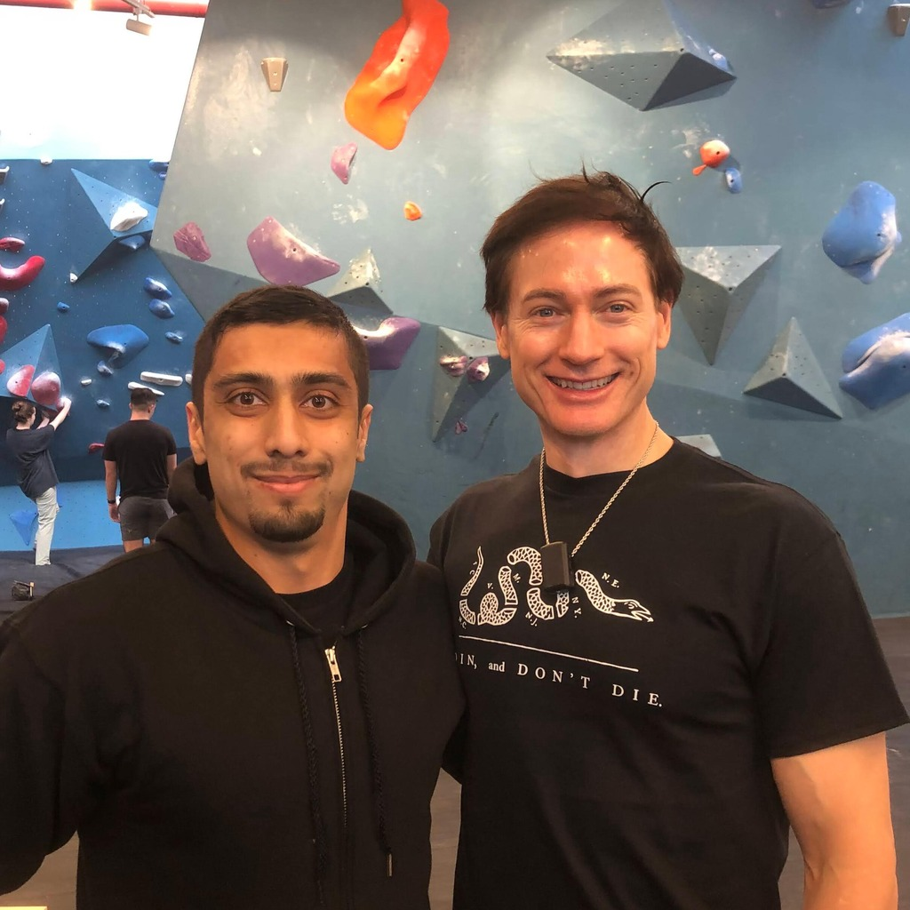

March 8, 2024
An inside look at Bryan Johnson's anti-aging Blueprint protocol and the community events where I experienced everything from bouldering to dance parties to philosophical discussions
Bryan Johnson, the founder and CEO of Braintree, led his company to a $800 million acquisition by PayPal in 2013. Following this success, he launched Project Blueprint, an ambitious anti-aging initiative aimed at significantly decelerating the pace of biological aging. Project Blueprint employs a STEM-based methodology, aiming for comprehensive health optimization through a regimen that includes over 100 supplement pills, meticulous dietary management, regular exercise, and detailed care routines for skin, oral health, hair, and eyes.
Johnson's efforts appear to have yielded remarkable results, including the slowing of aging equivalent to 31 years, a 31-year reversal in the aging of his grey hair, a 50% reduction in brain white matter hyperintensities (WMHs) as shown by MRI scans, and a 20-year reduction in the biological age of his free testosterone index (FTI). Despite these achievements, Johnson has faced skepticism and criticism on X, including public banter and criticism from high-profile figures such as Paul Graham and Elon Musk.
“May you live forever” is the worst possible curse once you understand deep time
— Elon Musk (@elonmusk) September 3, 2023
üíØ
— Elon Musk (@elonmusk) December 30, 2023
You may be telling us more than you mean to when you tell us that an extra 1 cm is worth all this trouble.
— Paul Graham (@paulg) January 31, 2024
Although the idea of undergoing Botox treatments or consuming 100 pills daily does not appeal to me, I respect Bryan’s methodical and transparent approach to anti-aging. He embraces a data-driven, closed-loop process to evaluate the efficacy of treatments, discontinuing those that prove ineffective. In essence, Johnson has become a self-experimenting pioneer, investing millions in the quest for advancements in health, wellness, and longevity. Johnson's self-aware sense of humor is also evident in his inclusion of the infamous "blood boy" clip from the satirical TV show Silicon Valley, which I found hilarious — it's easily the funniest show I've watched.
There are elements of the Blueprint protocol I find appealing, including its structured sleep schedule, dietary guidelines, exercise routines, and the emphasis on avoiding tobacco, alcohol, and drugs, along with a moderated supplement intake. The protocol has garnered a global following, with over 10,000 members in its Discord community, 800,000 YouTube subscribers, and 200,000 followers on X. Blueprint events, spanning from Singapore to San Francisco to Prague, have fostered a vibrant community; I had the opportunity to attend three such events in New York City in a single day.
My day began with a morning meetup at a Brooklyn bouldering gym, where I had the opportunity to engage with Bryan directly and discuss potential health concerns like endocrine disruptors, a topic I was researching for a future article. He expressed interest in learning more about it. Once enough people had gathered, we participated in a breathing exercise before commencing the climbing session. As a newcomer to bouldering, I quickly got the hang of it. While bouldering, I also met Kate Solo, Blueprint's CMO, who had tried Bryan's routine for 30 days, and Ryan Lambert, co-founder of River, a startup backed by Jason Calacanis and Balaji Srinivasan. Afterward, I sampled some Blueprint foods, including crackers with hummus and the flavorful Nutty Pudding, a blend of macadamia milk, macadamia nuts, ground walnuts, chia seeds, flaxseed, Brazil nuts, cocoa powder, cinnamon, berries, pomegranate juice, and pea protein.
As evening fell, I attended a dinner party and discussion hosted in a Brooklyn apartment. Here, I indulged in more Nutty Pudding and some appetizing snacks. The discussion centered around a thought experiment: If an algorithm could take better care of your body than you could, would you grant it control over your life? The conversation then explored the potential implications of a world where death did not exist. Johnson theorized that it might eliminate status games revolving around money, fame, and power. Some participants envisioned a decrease in global conflicts, while others predicted an increase.
One potential issue with such a world is that death creates a sense of urgency, motivating people to accomplish their goals within a limited timeframe. With an infinite lifespan, the incentive to prioritize work, write a book, create a TV show, or start a business within a certain timeframe may diminish. Creative works are often fueled by the desire to forge a lasting legacy, as a way to transcend one's mortality through one's art or accomplishments.
If a solution to maintaining motivation is found, it could potentially diminish the uniqueness between individuals. With unlimited time, focus, and energy, people could master a vast array of skills. Currently, one person may specialize in playing the piano, while another excels at tennis, making them distinct individuals. However, with eternity at their disposal, both could master both skills, blurring the lines that define their uniqueness.
While pursuing practices that extend life is commendable, death should not be entirely despised. As the former Roman emperor Marcus Aurelius eloquently stated,
Do not despise death, but be well content with it, since this too is one of those things which nature wills. For such as it is to be young and to grow old, and to increase and to reach maturity, and to have teeth and beard and grey hairs, and to beget, and to be pregnant and to bring forth, and all the other natural operations which the seasons of thy life bring, such also is dissolution. This, then, is consistent with the character of a reflecting man, to be neither careless nor impatient nor contemptuous with respect to death, but to wait for it as one of the operations of nature. As thou now waitest for the time when the child shall come out of thy wife's womb, so be ready for the time when thy soul shall fall out of this envelope.
After the dinner party and discussion, I attended the final event of the day – a dance party at the Ghost in Williamsburg, a short walk away. The party had a rave-like atmosphere, and Blueprint-approved non-alcoholic beverages were served. I tried a carbonated pomegranate drink infused with other ingredients, which was exceptionally refreshing. Although my dancing skills paled in comparison to Bryan Johnson's, I thoroughly enjoyed the lively atmosphere.
Reach out to me at farzinadil@gmail.com for any questions, suggestions, or feedback.